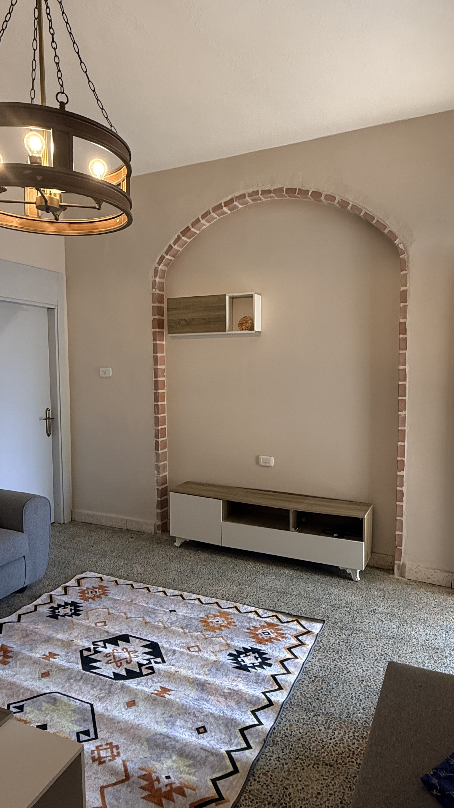
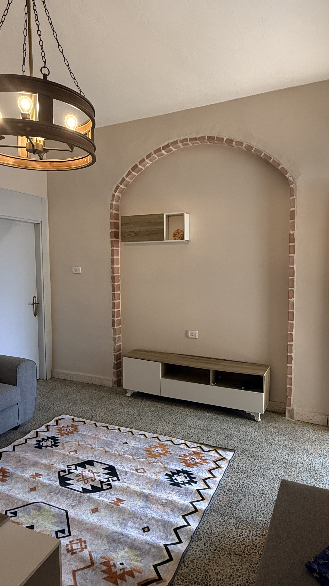
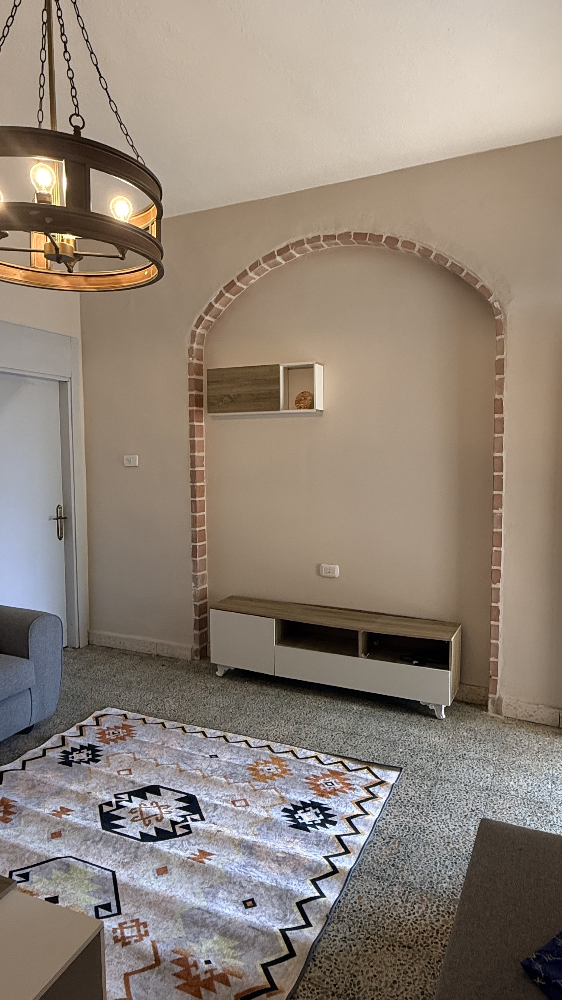

More than a stay —
a feeling of home in Amman
A place where you feel safe, welcomed, and cared for — especially if this is your first journey to Jordan.
View on Airbnb

A place where you feel safe, welcomed, and cared for — especially if this is your first journey to Jordan.
View on AirbnbStone walls, soft arches, and natural light — calm, beautiful, and instantly comforting.
Located in a quiet residential neighborhood, with shops, cafés, and Amman’s landmarks close by.
From helpful messages before arrival to local tips during your stay, Basil makes sure you never feel alone.
Basil has been hosting travelers in Amman for over three years. What matters most to him is that his guests feel safe, respected, and truly at ease.
His home is not just a place to sleep, but a space where journeys slow down and travelers feel genuinely welcomed.
“It is not just a place — it is a warm memory you will carry with you long after the journey ends.”